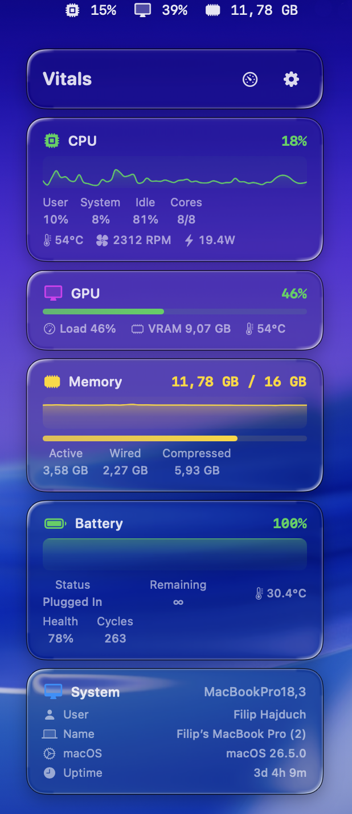

Fixed
- SMC read regression — CPU temperature, fan RPM, GPU temperature, and system power were missing from the popover due to a variable typo introduced in v2.3
Free & Open Source
A lightweight macOS menu bar app that monitors your system in real time with a native Liquid Glass interface. Built with SwiftUI for macOS 26 Tahoe. Now with beautiful Liquid Glass-style widgets featuring donut rings and live status colors.
Requires macOS 26 Tahoe. Not notarized — see About for details.

Built with Apple's NSGlassEffectView API for an authentic, system-native glass effect. Three style variants with adjustable opacity — not an approximation, the real thing.
Beautiful Liquid Glass-style widgets with donut rings, angular gradients, status-color glow, and SF Pro Rounded typography — a full redesign for a macOS Tahoe-native feel. Five WidgetKit widgets: System Health, Storage, Battery, Network Info, and the new System Overview (Battery + Storage as donut rings side-by-side with network info, in medium and large sizes).
Reorder sections and menu bar items, toggle visibility, adjust text size from 80% to 130%, choose glass style and opacity. Make it yours.
IOObjectRelease via defer) in DiskMonitor and GPUMonitorautoreleasepool to prevent long-lived CF leaksmetrics.json written with owner-only permissions (0o600)NSAppTransportSecurity disallows arbitrary loads (HTTPS only)NSGlassEffectView for authentic Liquid Glass lookVitals is a lightweight system monitor that lives in your macOS menu bar. It gives you instant access to CPU, GPU, memory, battery, network, disk, and WiFi stats — all wrapped in a native Liquid Glass interface that feels right at home on macOS 26 Tahoe.
Unlike other system monitors, Vitals uses Apple's private NSGlassEffectView API to render authentic glass effects, not approximations. The result is a UI that looks and feels like a built-in part of macOS.
The app also includes four desktop widgets for at-a-glance system info, full menu bar customization, and a settings panel with appearance controls including glass style variants, opacity, and text scaling.
Hi, I'm Filip Hajduch, a Cybersecurity student from Zlín, Czech Republic. I wanted a simple, clean system monitor for macOS that looks almost native — like it was made by Apple. I couldn't find one, so I built it myself.
Vitals is still actively developed. I keep adding features and ideas as they come — if something interesting can make it better, it goes in. The project is completely free and open source. You can review every line of code on GitHub. If you find it useful, consider giving it a star!
@filiphajduch420When you first open Vitals, macOS will warn you that it “cannot verify the developer.” This is because the app is not notarized with Apple — I'm a student and can't afford the $99/year Apple Developer Program fee.
To open the app, go to System Settings → Privacy & Security and click “Open Anyway” next to the Vitals message. You only need to do this once.
The entire source code is available on GitHub. You can audit it, build it yourself, and verify that it does exactly what it says — nothing more.
Released under the MIT License.